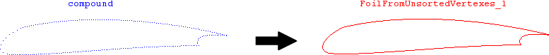

cfdmsh 4.0 documentation
cfdmsh 4.0 documentation cfdmsh 4.0 documentation


Makes a foil wire from an unsorted compound of vertexes.
This function first looks for a feature angle, then tries to find the nearby vertex giving the smoother transition, and so on.
The resulting shape is a wire made of smooth edges separated at feature angles.
This function is particularly useful when the foil is imported as a set of unsorted nodes, which can not be reorganized according to their proximity because of the narrowness of the trailing edge.
def MakeFoilFromUnsortedVertexes( compound = None, coef = 1.5, coef2 = 0.02, strat = "grow", poly = False, angle = 60, add = True, infa = False ):

| Name | Description | Type | GUI selection [?] | Selection by name [?] | Recursive [?] | Default value |
|---|---|---|---|---|---|---|
| compound | The compound of vertexes describing the foil. | List of 1 Compound of Vertexes + 1 Vertex |
yes | yes | - | [None] |
| coef | Coefficient influencing the search distance: search_distance = coef * mean_distance_between_vertexes |
Float | - | - | - | 1.5 |
| coef2 | When the foil curvature is very low, some vertexes can be skipped. This coefficient has an influence on skipped vertex detection. Lower it is, finer is the detection. |
Float | - | - | - | 0.02 |
| strat | The search distance strategy. If equals "grow", the search distance increases until at least one nearby vertex is seen. If equals "stop", the algorithm stops when no nearby vertex is seen within the search distance. |
String | - | - | - | "grow" |
| poly | If True, the output wire is made of straights edges. If False, the output wire is made of smooth edge. |
Boolean | - | - | - | False |
| angle | The feature angle in degrees. | Float | - | - | - | 60 |
| add | See here. | Boolean | - | - | - | True |
| infa | See here. | Boolean | - | - | - | False |
| dim Value [?] | single Value [?] | Type | Number | Name |
|---|---|---|---|---|
| - | - | Wire | 1 | "FoilFromUnsortedVertexes" |
from cfdmsh import * # To adapt to the cfdmsh installation method
vertex1 = geompy.MakeVertex(0, 0.1, 0)
vertex2 = geompy.MakeVertex(-0.1, 0, 0)
vertex3 = geompy.MakeVertex(0, -0.1, 0)
vertex4 = geompy.MakeVertex(1, 0, 0)
arc = geompy.MakeArc(vertex1, vertex2, vertex3)
edge1 = geompy.MakeEdge(vertex1, vertex4)
edge2 = geompy.MakeEdge(vertex3, vertex4)
vertexes1 = RebuildSpline(10, arc, dim = 0, single = False, add = False)
vertexes2 = RebuildSpline(30, edge1, dim = 0, single = False, add = False)
vertexes3 = RebuildSpline(30, edge2, dim = 0, single = False, add = False)
vertex_compound = geompy.MakePartition(vertexes1 + vertexes2 + vertexes3)
AddToStudy(vertex_compound, "compound")
foil_wire = MakeFoilFromUnsortedVertexes(vertex_compound)
The input vertex compound must be planar.
cfdmsh 4.0 documentation
tougeron-cfd.com © 2016